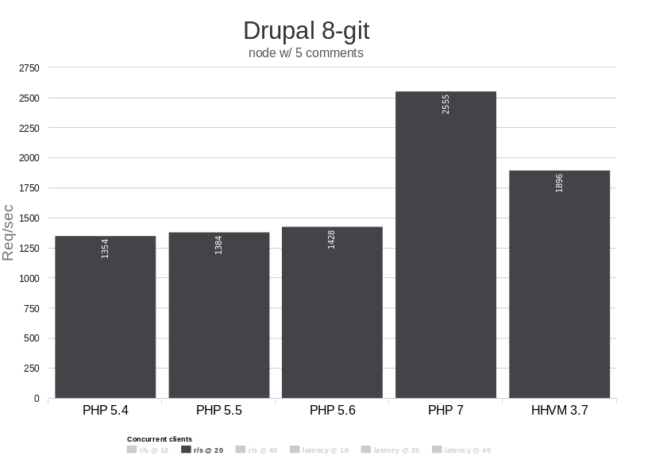
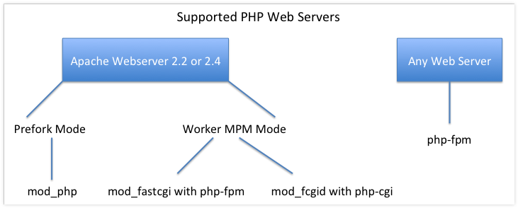
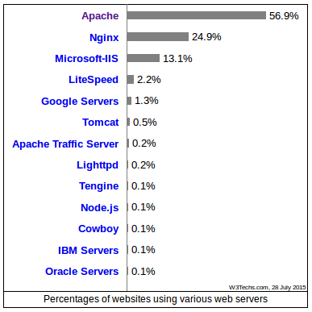
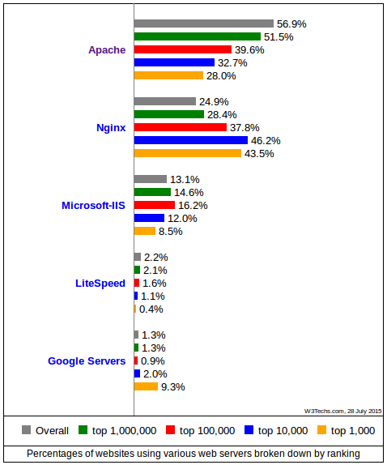
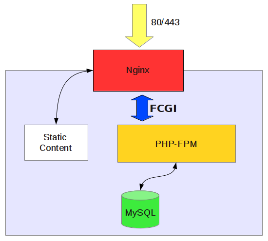

¿Quién es?
@betoscopio

Disclaimer
Web Stack?
PHP
MySQL
Apache
Linux
¿Hace cuanto?
Hay un mundo allá afuera...
La herramienta apropiada para cada problema

¿Es LAMP la mejor solución para todo proyecto PHP?
¿Alernativas?
LEMP
PHP
MariaDB
Nginx
Linux
PHP
¿Qué versión usas?
Menor a 5.3?
PHP 5.2 EOL:
6 Jan 2011, 4 years, 6 months ago
PHP 5.3
- Namespaces
- Funciones anónimas (closures)
PHP 5.3.29 EOL, 14 Aug 2014, 11 months ago
PHP 5.4
- Manejo de peticiones FastCGI
- Traits
- Sintaxis corta para manejo de arrays
- Mejor manejo de memoria
- Grandes mejoras en rendimiento
- Servidor web incorporado
$ php -S localhost:8000 [-t dir/]
PHP 5.4
- Sin soporte activo hace 10 meses
- Soporte de seguridad hasta 14 Sep 2015
PHP 5.5
- Opcode cache incorporado
- Mejoras en manejo de excepciones
- Deploys atómicos
PHP 5.5
- Sin soporte activo hace 21 días
- Soporte de seguridad hasta 10 Jul 2016
PHP 5.6
- Se incluye PHP debugger (phpdbg)
- Constant Scalar Expressions
- Operador para manejo de argumentos: ...
- Operador exponencial: **
- Posible subir archivos mayores a 2Gb
PHP 5.6
- Soporte activo hasta 28 de Agosto de 2016
- Soporte de seguridad hasta 28 de Agosto de 2017
Otras versiones?
PHP NG
Muchas razones para cambiar...
Es tiempo de actualizar
- 5.2 → 5.3: http://php.net/migration53
- 5.3 → 5.4: http://php.net/migration54
- 5.4 → 5.5: http://php.net/migration55
- 5.5 → 5.6: http://php.net/migration56
Pero mi Shared Host no soporta...

MariaDB
“...they have no love for open source, working with the community, or MySQL in general.”
Monty Widenius
MariaDB
Algo de historia:
- 2008: MySQL AB es vendido a SUN Microsystems
- 2009: MySQL es vendido a ORACLE
- 2009: y el desarrollo de MySQL?
- Casi todos los desarrolladores originales de MySQL trabajan ahora en MariaDB.
Hacking Business Model
MariaDB
- Fork de MySQL, con la intención de mantener un proyecto guiado por la comunidad.
- Primer release 22 de enero de 2009
- Liderado por autores originales de MySQL
- Un objetivo principal es mantener binaria con MySQL, APIs y comandos
Algunas características técnicas
- Nuevo motor de almacenamiento XtraDB como reemplazo a InnoDB.
- Nuevo motor de almacenamiento Aria para motores transaccional y no transaccional. (WIP)
- Hasta la versión 5.5 seguía el número de versión de MySql.
- Diferenciaciones en nuevas versiones 10 en adelante.
- No se importan todas las características de de MySQL 5.6
Quién lo usa?
Compatibilidad
https://mariadb.com/kb/en/mariadb/mariadb-vs-mysql-compatibility/
MariaDB
“...the simple truth is that there is no reason to use MySQL over MariaDB any more, while there are plenty of reasons to choose MariaDB.”
Monty Widenius
Servidores web

PHP FPM
- Fast CGI Process Manager
- Puede correr multiples procesos PHP worker para servir peticiones Fast CGI
- PHP > 5.4
Servicio PHP FPM
# apt-get install php5-fpm
# service php5-fpm restart
Porcentajes de uso


nginx
Servidor Reverse Proxy, para los protocolos HTTP, HTTPS, SMTP, POP3 e IMAP, además de ser un balanceador de carga, HTTP cache y Servidor Web.
nginx
- Su desarrollo fue iniciado en 2002 por Igor Sysoev
- Desarrollado para servir HTTP dinámico usando FastCGI, SCGI como manejadores de scripts
- Diseñado para hacerse cargo del "problema de los 10000".

nginx
“The most important is that nginx is a reverse proxy first and HTTP server second, its first concern is not files but rather URLs, this changes the way we have to configure nginx.”
de la documentación de nginx
Instalación
# apt-get install nginx
# service nginx start
Configuración Básica
/etc/nginx/nginx.conf
/etc/nginx/sites-available/default
Configuración de PHP independiente del servidor web. (El servidor web sólo se comunica con PHP, no interpreta)
/etc/php5/fpm/php.ini
Sistema Operativo
- Usa un SO de verdad
- ¿En qué Sistema Operativo se ejecuta tu software?
- Mantente “cerca” de producción
Linux
- Máquinas virtales
- Vagrant?
- Linux containers , LXC (kernel >= 3.8)
- Phanteon
- Platform.sh
- ...

Docker
- Linux Containers hechos fácil
- Escrito en lenguaje Go
- Drupal con Dockers del desarrollo al deploy
- http://drupalcampcr2015.digitalizate.mx
Referencias
- http://talks.php.net/oscon15
- http://talks.php.net/show/phpdaymx13/
- Una vision general de PHP
- NGINx: origen, evolución y futuro
- https://anturis.com/blog/nginx-vs-apache/
- http://www.freelock.com/blog/john-locke/2015-07/drupal-docker-pinch-salt
Gracias
@betoscopio